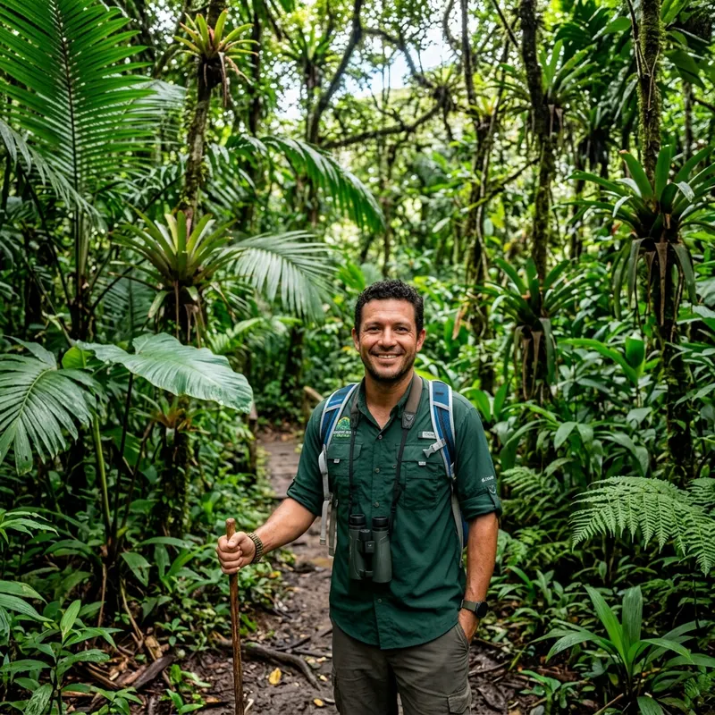

Térkép
Az Amazonas a Föld legnagyobb esőerdője és egyben a világ legnagyobb vízhozamú folyórendszere. Dél-Amerika északi részén terül el, és mintegy hétmillió négyzetkilométeren kilenc országot érint: legnagyobb része Brazíliához tartozik, de átnyúlik Peruba, Kolumbiába, Ecuadorba, Bolíviába, Venezuelába, Guyanába, Suriname-ba és Francia Guyanába is. A térség éghajlata egész évben forró és párás, az eső pedig szinte naponta esik, ezért alakult ki itt ez a hihetetlenül sűrű és gazdag növényvilág.
Ecuadori Amazónia (Morona-Santiago / Cuyabeno) Kezdő
Rövidebb, könnyebb gyalogos nyomvonalak és esőerdei ösvények érhetők el itt (például a Wikiloc adatbázisában is szereplő helyi ösvények)
Leticia / perui-kolumbiai határvidék Haladó
Kiváló bázis a közösségi ökoturizmushoz, mint például a Musmuki projekt, ahol majmok védelmével és helyi tavi horgászattal egybekötött sétákat tarthatsz.
Manaus (Brazília) Profi
Az Amazonas szíve. Innen indulnak a legtöbb napos vagy többnapos dzsungeltúrák, például a Rio Negro és az Amazonas összefolyásához, valamint a Presidente Figueiredo nevű vidékre, amit a „vízesések földjeként” is emlegetnek.
Amazonas Gerilla Beszülött
Nehezen megközelíthető terep, ahol utak helyett csak folyók vezetnek át a sűrű dzsungelen. A párás meleg, a mocsarak és az áthatolhatatlan növényzet miatt itt csak tapasztalt, helyi vezetővel érdemes elindulni, és a gerillák is ezért rejtőzhettek évtizedekig.
Idegenvezetőink
Mateo Silva
Lelkes, barátságos és türelmes helyi fiatalember, aki az esőerdő szélén nőtt fel. 2 éve vezet túrákat, kiválóan ismeri a könnyen járható tanösvényeket. Kifejezetten kezdőknek, családoknak és fotózni vágyóknak tart pihentető, látványos sétákat, ahol a hangsúly a természethez való kapcsolódáson, biztonságon és a növényvilág játékos bemutatásán van.

Carlos "El Mago" Mendoza
Energiával teli, éles szemű természetvédelmi szakértő, aki szinte minden rejtőzködő állatot kiszúr. 10 év terepi tapasztalat a mélyebb dzsungelösvényeken. Haladó túrázóknak ajánlott útvonalakat vezet, ahol a változatos terep, a szintkülönbségek és a vadon élő állatok (madarak, majmok, hüllők) megfigyelése áll a középpontban.
Gabriel Santos
Nyugodt, rendkívül tapasztalt és tiszteletet parancsoló dzsungelszakértő, aki a legmostohább körülmények között is otthon van. Több mint 20 év az esőerdő legérintetlenebb, mély zónáiban, beleértve az éjszakai és túlélési túrákat is. Kifejezetten profi túrázóknak tart többnapos, kihívásokkal teli dzsungeltúrákat és éjszakai felfedezőutakat.
Idegenvezetőink munka közben
Galéria
Tekints bele túráink legszebb pillanataiba!